IxD Infographic
Interaction Design Road Trip
Week-long project to make an infographic describing what interaction design is to non-interaction designers. Made during my Sophomore year of college.
00
Introduction
It’s not about going from point A to point B, It’s the journey along the way that makes it worthwhile.
Explaining what interaction design is has proven to be one of the more difficult tasks I’ve faced in school. Forget the deadlines, the learning curve, the stress; trying to give IxD an explanation that does it justice is something I can’t seem to accomplish (and everybody around me as well for that matter — professionals included). For this poster, I attempted to explain what interaction design is for non-designers.
This piece was featured in Christina Wodtke’s article on the Foundations of Interaction Design course she taught at CCA.
01
Brainstorming
The first question is the obvious one, “What is interaction design?” Yes, I know what it means, but I also hang around interaction designers every single day. If it were an infographic for interaction designers, it would probably include a lot of technical jargon that has all been said before. A poster like that may fit the criteria for this project just fine, but that is not the purpose of this poster. Inclusion and understandability from an audience that’s not mine is the baseline when creating this poster. There’s more to explanation than projection.
The most effective way to convey a complex subject is through a metaphor. Keeping in mind what my instructor Christina Wodtke said,
“The problem with designing metaphors is that we tend to prioritize design over the metaphor or vise versa. It is important to choose a metaphor that won’t crack under ones curiosity with it.”
Creating a middle ground between interaction design and a simple explanation became the design challenge, and the next step was to find a metaphor that could empathize from both perspectives.
| 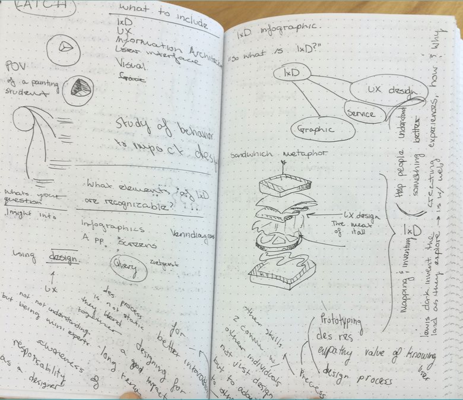 | 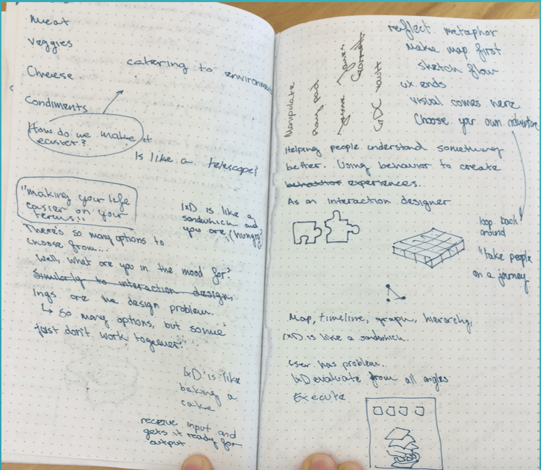 | |
| 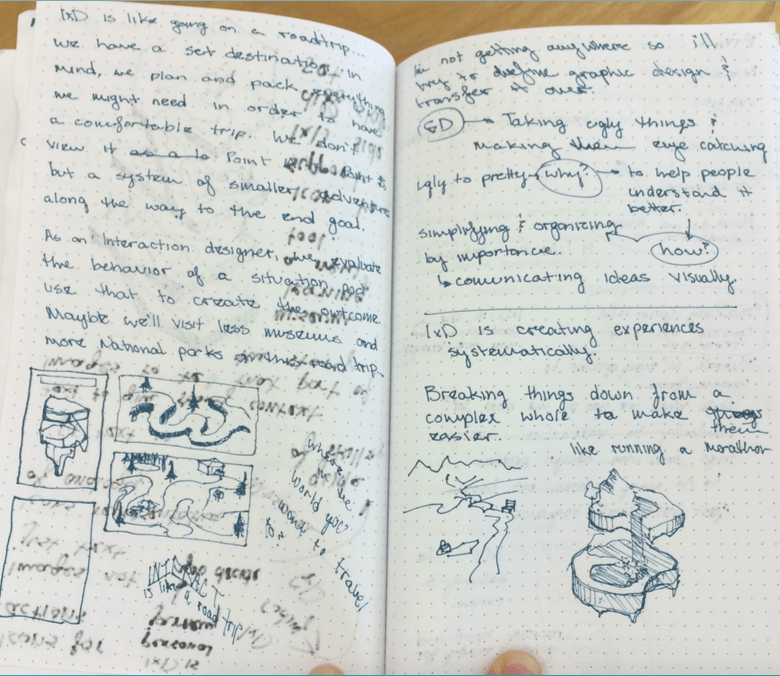 | 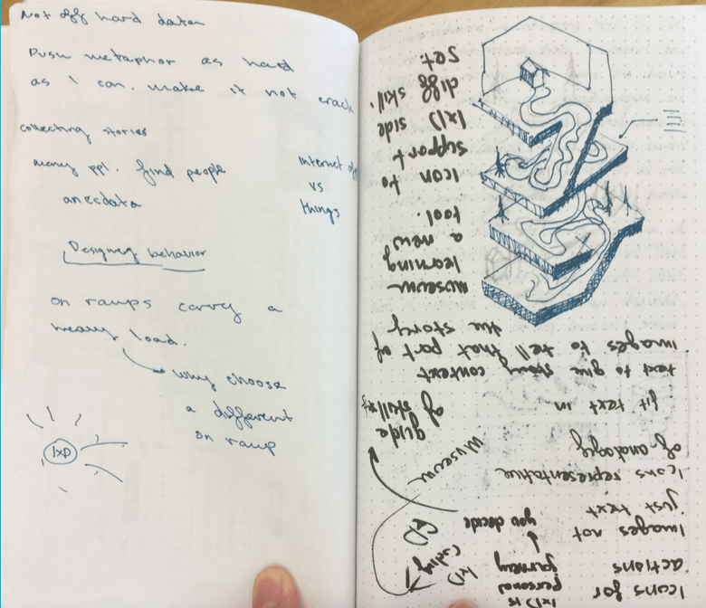 |
My first metaphor attempt was of a cheeseburger. What parts of interaction design represented the bun? The patty? The stacked shape of the design was compelling, but the metaphor was flawed. Making a direct correlation between the designers skill set and the anatomy of a sandwich wasn’t very helpful in getting an outside audience to understand an interaction designer’s process.
With the stacked shape still in mind, I thought of ways each platform could represent my concept. What if a landscape replaced the concept of food? I sketched various shapes of individual worlds: spaces a viewer could explore and connect with while still engaging with the content.
| 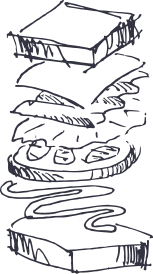 | 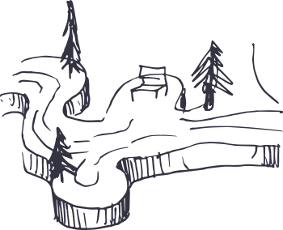 |
What would these two ideas look like combined?
Traveling through land would require transportation, so why not make the metaphor about a road trip traveling through the poster. Ideas flowed naturally after that.
02
Construction
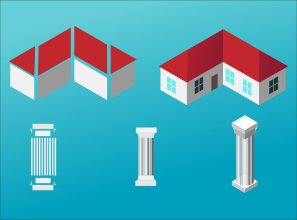
For the construction of this piece, I used Lynda.com’s tutorial on making objects isometric. You can download the actions to create your own isometric illustrations here. I created each piece using primitive shapes and the pen tool. I strived to make each piece recognizable as an object, but simple enough for viewers to understand how each object was made. The house and the columns in this example, while complex in its final stages, can be broken down to simple parallelograms and rectangles.
03
Final Poster
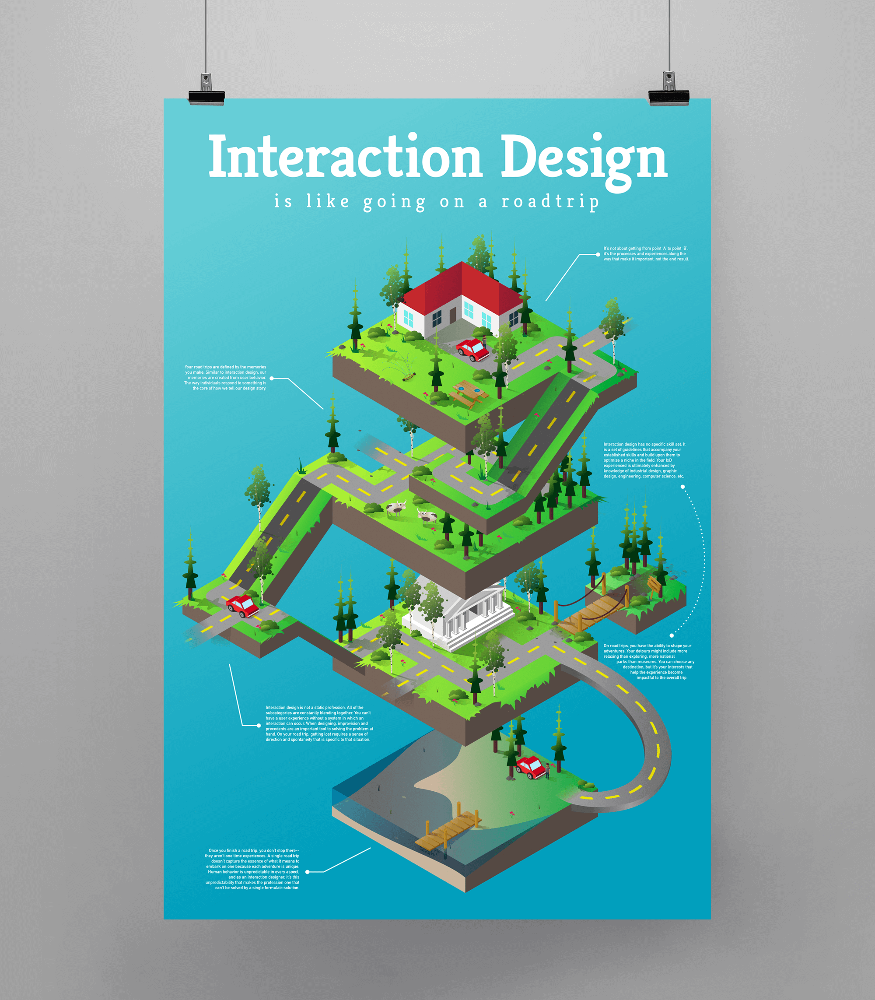
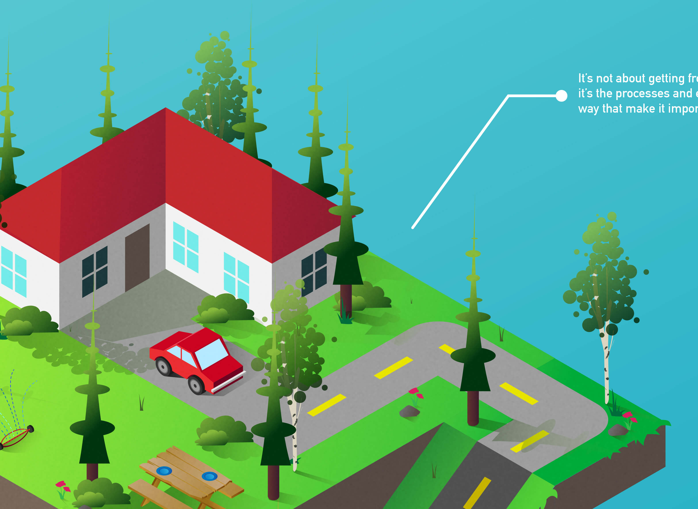
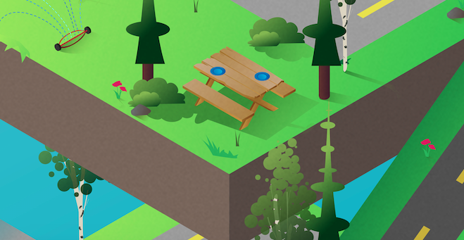
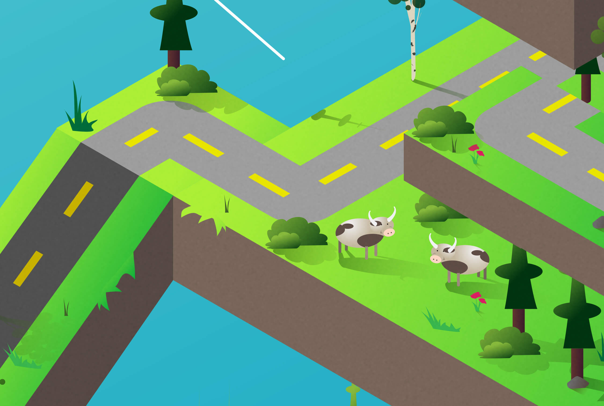
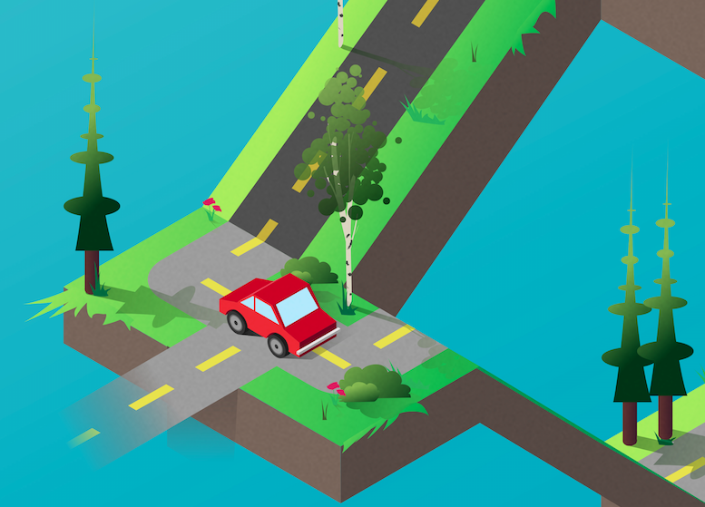
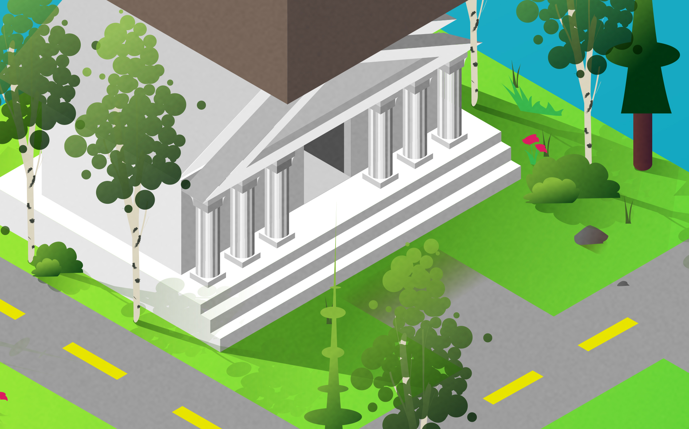
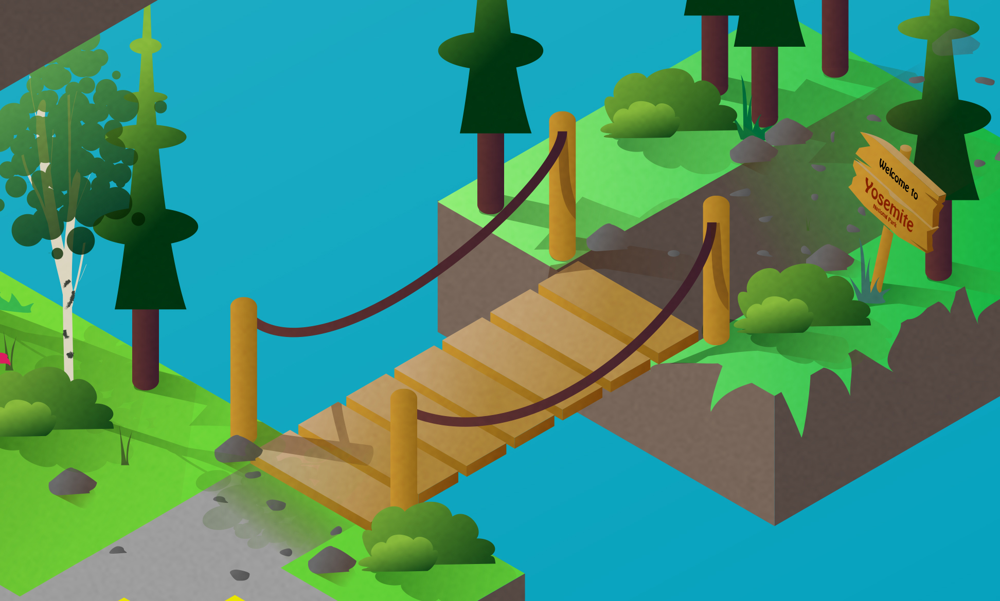
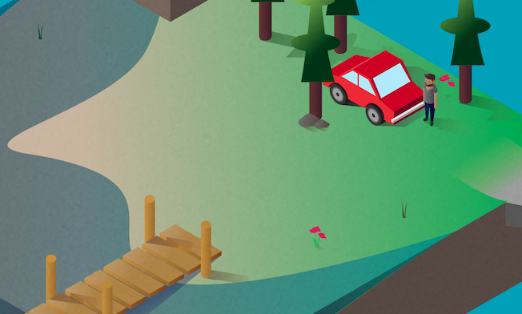
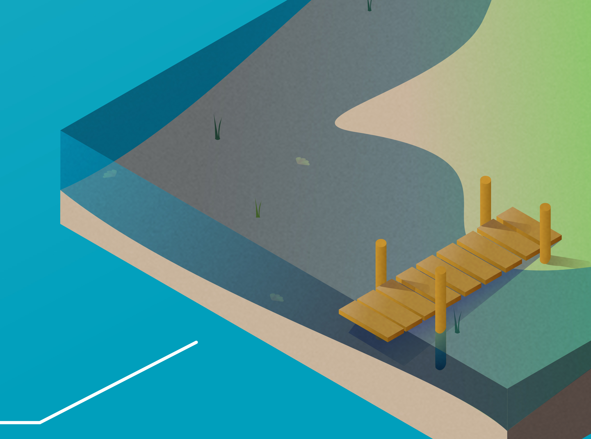
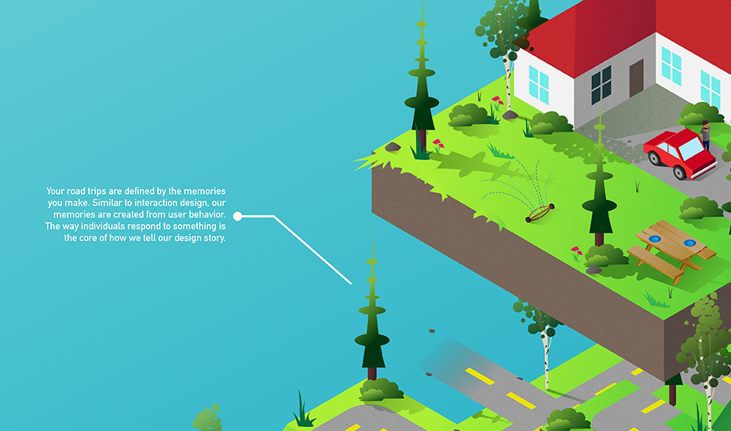
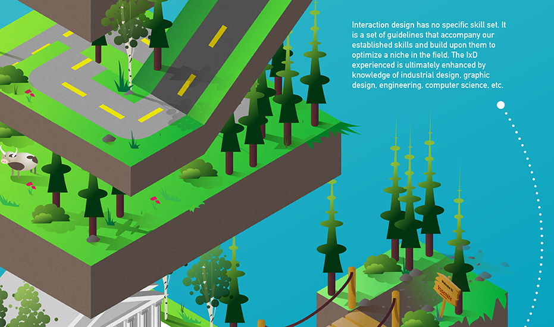
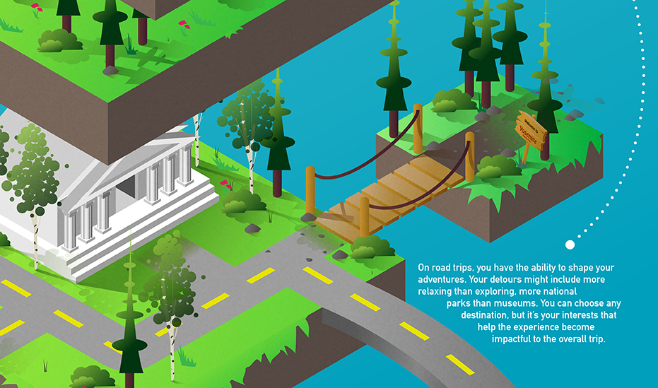
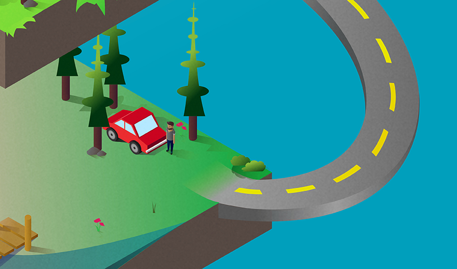
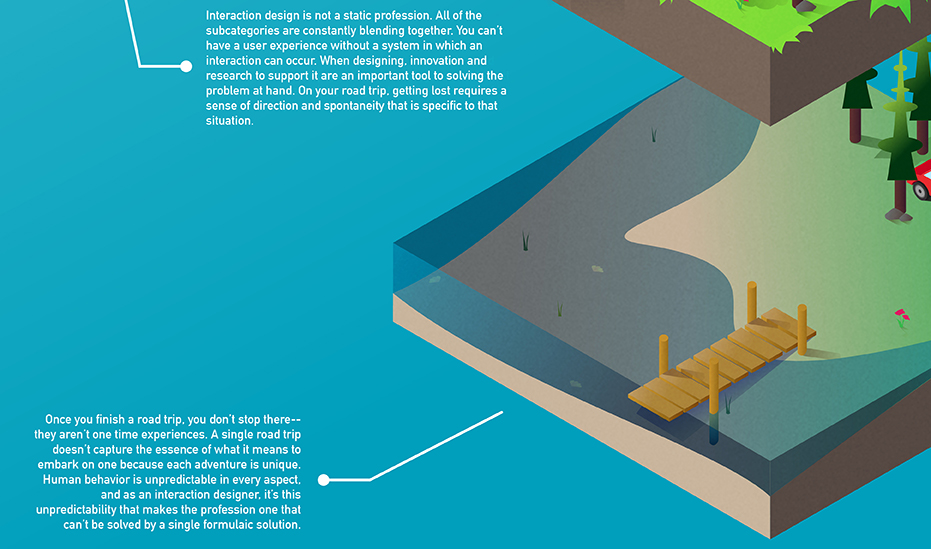